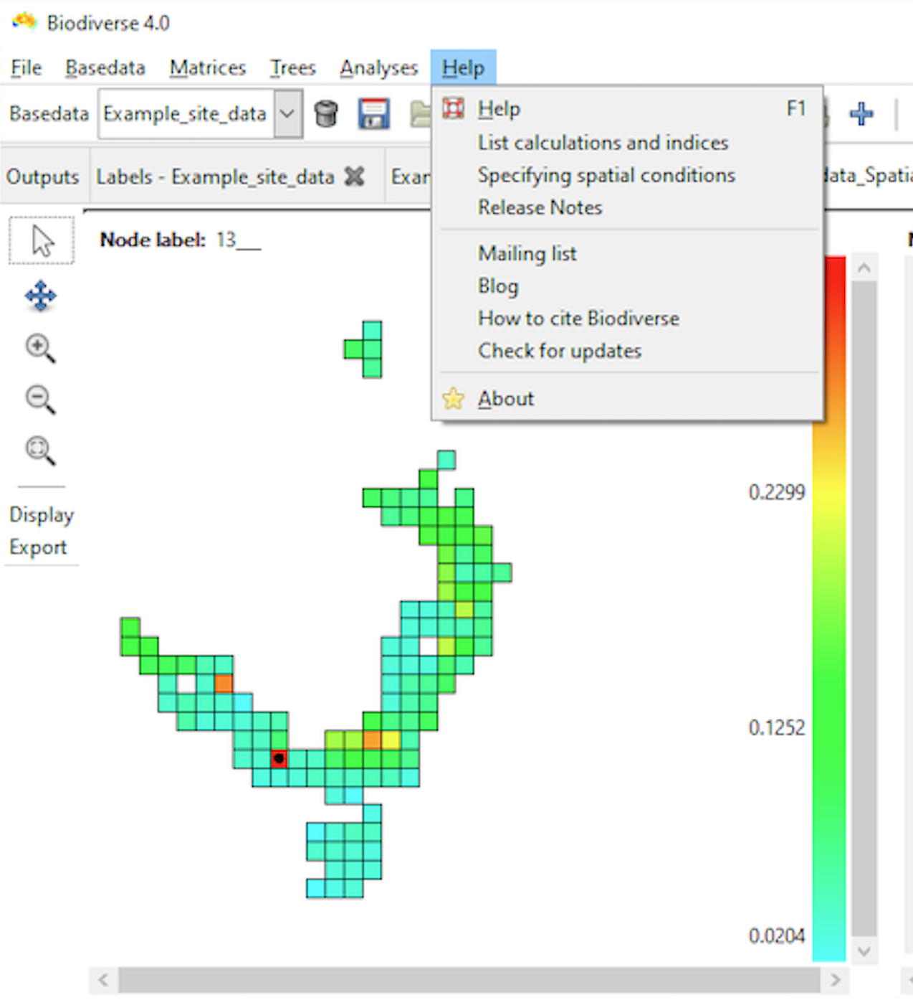
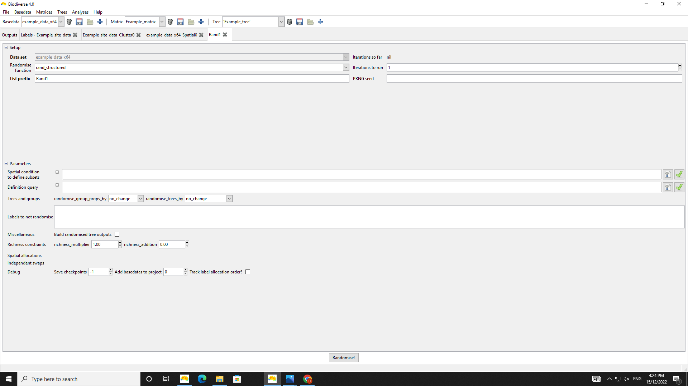

1 Overview of Biodiverse
1.1 What is Biodiverse
Biodiverse is an open source tool for the spatial analysis of diversity using indices based on taxonomic, phylogenetic, matrix and trait-based relationships. Analyses can be run on a wide range of variables that vary across space and/or time whether they are biological, physical or lingual.
For example, the diversity distributions of marsupials across Australia, or variation in rainfall across continental US, even geographic distribution of indigenious dialects, can all be analysed with Biodiverse.
1.1.1 What is covered in this Quick Start Guide
This Quick Start guide introduces you to the main features of Biodiverse. It draws information from the full range of more extensive Biodiverse help documentation
Specifically we will cover how to do the following in Biodiverse:
- Importing and exporting data
- Data visualisation
- Cluster analysis
- Spatial moving window analysis
- Randomism analysis
The tutorials in this guide use the sample data sets provided in the Biodiverse/data folder.
This guide does not cover all the detailed aspects of Biodiverse functionality, so links to the online Biodiverse documentation covering more detailed information are provided throughout.
1.2 What analyses can I do with Biodiverse?
You can run a range of spatial analyses, such as:
- cluster
- moving window
- randomisation analyses
You can also visualise analysis results in interactive diagrams and maps, and optionally export analysis results to a variety of formats (e.g. delimited text, geoTIFF, JSON) to third party software for further analysis, such as ESRI ArcGIS, R and Matlab.
BiodiverseR - an R package to Biodiverse is currently under development to offer the same functionality as the main software
1.3 Where can I get additional help?
You can access a range of Biodiverse Help Topics by clicking on the Help option on the menu bar within the Biodiverse application

You can also hover the mouse pointer over most buttons and menu items in Biodiverse to view their associated tooltips.
Alternatively, you can post your question at our Google Group Forum. We recommend searching through past conversations to see if your question has been raised by others.
1.4 Which operating systems does Biodiverse support?
Biodiverse is supported on Windows, MacOS and Linux platforms.
You can install the binary/executable or source code versions of Biodiverse at out Installation Page
The binary/executable is ‘all-in-one’ which includes the analysis engine + GUI.
If you just want the analysis engine only, follow the installation instructions for the source code version.
1.5 What programming language is Biodiverse developed in?
Biodiverse - the software itself comes in two parts:
1.6 How do I install Biodiverse?
Follow the Installation instructions webpage for your selected version.
1.7 Key terminology
The two concepts below are important when using Biodiverse. For details of a fuller list of Biodiverse terminology, see the Data Structures page.
1.7.1 Labels
Typically labels represent species, but in reality they can be any named entity that is then aggregated, or ‘binned’, into a Group. Hence, an individual label could also represent other taxonomic levels, e.g. a genus, or distinct entities from other phenomena, such as lithological classes (e.g. different rock types) or linguistic structures (e.g. different phonemes).
1.7.2 Groups
Groups are cells into which the labels are aggregated (binned). These are usually square, but can represent any number of axes (x, y, z, time, population-ID, …) with differing cell sizes (resolutions) and numeric or text types. The groups are plotted in the interactive maps that Biodiverse produces as outputs of data visualisation and spatial analyses, as in the example below. Groups are also integral to the spatial components of the moving window, cluster and randomisation analyses.
Please note however, that group coordinates are in the same coordinate system (map projection) as the input data. If you have input data in multiple files, with differing coordinate systems, then you can use GIS or other geospatial tools such as the sf library in R to project them into a common system.

The ‘Groups’ are the square cells representing the Australian mainland.